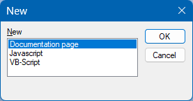

When you create a new documention file you must first choose the type of file you want to add. This is done through the standard new-file dialog of the framework. This dialog looks like this:

For regular documentation pages (like this one) you should take the first and default option "Documentation page". Other choices are Javascript (*.js) or VB-Script (*.vb).
After clicking the "OK" button, you will be presented with a dialog to enter a file name and another "OK" button.